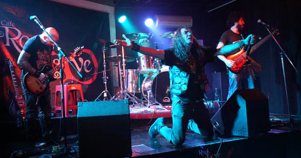

PRÓXIMAS PRESENTACIONES
OCTUBRE 5, 2019
El sábado 5 de octubre Palieres Rock se presenta en el Marquee, para festejar sus 25 años, y presentar su disco, junto a 2 bandas amigas: Smokes Monkeys (presenta su EP), y KAOS (presenta su disco)
Marquee Session Bar, Scalabrini Ortiz 666, CABA. 20 hs PUNTUAL!

PALIERES ROCK, 25 AÑOS
Palieres Rock nació en el año 1994, en el barrio de Villa Crespo. Sus comienzos en la escena del rock fueron en plazas y parques tales como Parque Avellaneda, Parque Centenario, Parque Saavedra, y luego tocando en lugares como: Arlequines, Cemento, Loca Bohemia, Betty Blues, Halley, Remember, Melonio, Amadeus, Vía Cerino, Coctel Rock, Margarita, entre otros.
En el año 1999 editan su primer álbum "Bienvenidos a Nuestro Mundo" con 12 temas, uno de los cuales participó en la banda sonora de la película independiente "Alan" de Federico Tarántola.